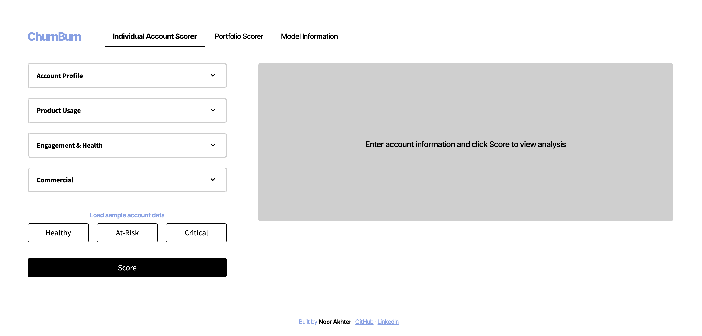

Recent(ish) Computer Science & Politics grad from Pomona College based out of Seattle — aiming to make a transition from Customer Success to Product work. Passion for building solutions with value rooted in user needs & customer empathy. Fueled by matcha and Steph Curry highlights.
I graduated from Pomona College in May 2025 with a double major in Politics & Computer Science, equipping me with both the hard and soft skills necessary to take on a people-facing technical role.
Since graduating I've been at Okta on the Customer Success team, where I manage product adoption strategy for 93 at-risk accounts impacting ~$8M ARR and serve as the voice of the customer — synthesizing feedback from 300+ customers into actionable product insights delivered directly to Okta's product teams. That experience has shaped how I think about product: I care deeply about the gap between what's built and what users actually need, and I know how to close it.
In my free time, I'm heading to new restaurants to add to my Beli, making a new Spotify playlist, reading at one of Seattle's many beautiful parks, or trying my hand at a new creative hobby (bead embroidery is my choice right now).
I'm open to entry level, full-time product roles — contact me here!

An AI-powered end-to-end churn prediction tool for B2B SaaS Customer Success teams. Defined the problem space from CSM domain knowledge, synthesized a realistic 8,000-account dataset, trained an XGBoost classifier (0.87 PR-AUC), and deployed a Streamlit app with SHAP-based explanations and action recommendations.
● Completed